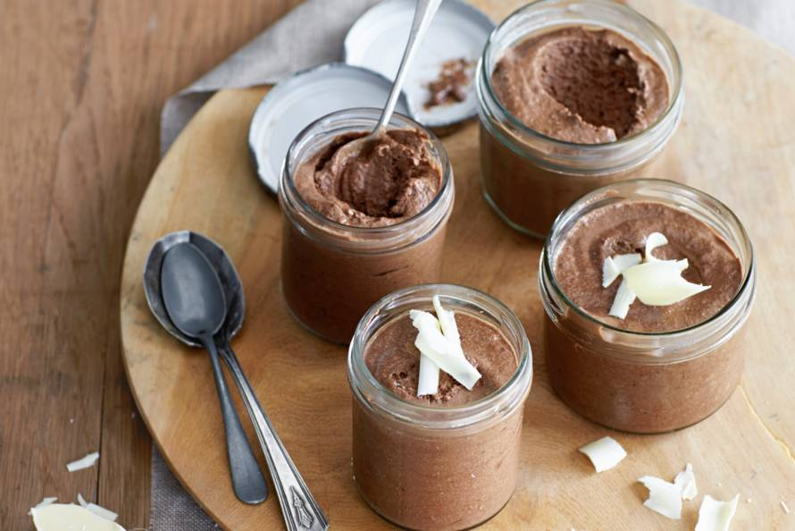

Makkelijke chocolade mousse
Voor dit makkelijke basisrecept voor luchtige chocolademousse heb je maar 4 ingrediënten nodig
Ingrediënten
- 250 gram pure chocolade
- 3 eiwitten
- 75 gram suiker
- 250 gram slagroom
Bereidingswijze
- Kook een pan met heet water
- Smelt de pure en melkchocolade au bain marie in een kom boven een pan met heet water
- Klop ondertussen de eiwitten stijf in een vetvrije kom. Doe de suiker er beetje bij beetje bij tijdens het mixen.
- Klop in een andere kom de slagroom stijf. Schep de gesmolten chocolade voorzichtig door de slagroom, en als deze is opgenomen spatel je de eiwitten er door. Klop niet te lang ander klop je de lucht er uit.
- Verdeel de chocolademousse over 4 glaasjes en laat minimaal 3 uur opstijven in de koelkast. Garneer de chocolade mousse met wat geraspte chocolade.

Tip Je kunt deze mousse ook maken met melkchocolade of een combinatie van melk en puur. Dit dessert is ook ideaal om een dag van te voren te maken, zo heb je snel en makkelijk een dessert voor Kerst.